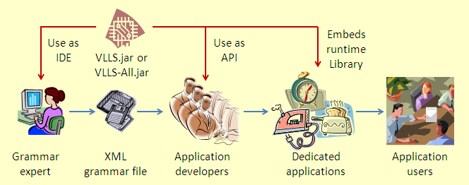

The following sections describe the two distinct roles (and skills) of VisualLangLab users and the workflow that connects their activities. The same individual could (and perhaps typically will) of course perform both roles.
Before proceeding any further, readers should note the following definitions.
Note: Readers, particularly those who will be Using the API, should be aware that Scala's parser combinators (which VisualLangLab uses internally) assigns a type called Parser to parser-rules (and even the nodes that comprise them). VisualLangLab documentation however avoids using that meaning of parser, preferring the definition given above instead. So, be careful when reading Using the API which has to use both the meanings. The Relationship with Scala Parser Combinators has more details.
Figure-1 below illustrates the development workflow, and shows the different ways in which different groups of people use the VisualLangLab software.

Figure-1. Development workflow using VisualLangLab
The grammar expert is responsible for developing and testing a parser. From the grammar expert's point of view, a parser is not an application or piece of code, but an XML file containing a specification from which code may be produced. This parser is saved as an XML file (with suffix vll) that can be published for use by application developers. The grammar files can also be reopened in the IDE for reviewing, testing, or modification.
Anyone with a knowledge of parsing concepts (and an understanding of the target grammar) can be trained to develop and test parsers using the interface described in The GUI. Manual testing, following prescribed test cases, is also possible without knowledge of programming. Development of automated test cases (e.g. using Javascript action-code or JUnit) however does require knowledge of programming, and is described in Testing Parsers.
The GUI (the grammar editor) can be run by following the instructions in Download Install and Run, and a grammar can be created or edited by following the instructions in Editing the Grammar Tree. An understanding of the Relationship with Scala Parser Combinators provides a bridge to the Application developer's perspective.
An application developer uses already available grammar files to create applications for specific requirements. While an applicaion developer may use The GUI to understand and review the grammar, his primary focus is Using the API and the description of the AST and Action Code.
An application developer also needs to be an expert in the use of programming tools, have a good understanding of Scala, and have access to a domain expert who understands the application's requirements well.
The Application user is typically unaware of the constituents of his dedicated application, and the process that was used to design and develop it. The VisualLangLab runtime library and one or more grammar files are embedded in the product, and depending on the nature or purpose of the application it may or may not be necessary for the user to be aware of these factors.
The good way to quickly get an understand of VisualLangLab is to start up the IDE, review and modify the Sample Grammars and test the parsers.